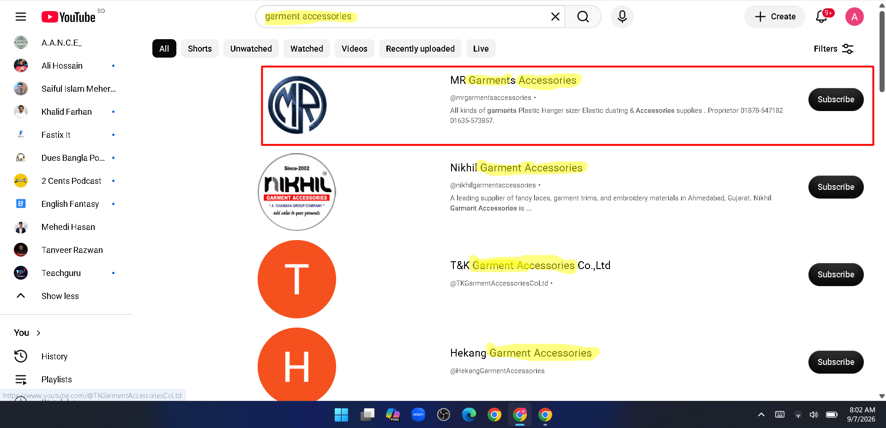

BEFORE OPTIMIZATION
Before Optimization
The channel had limited visual branding and needed improvements in its overall presentation, structure, and optimization.

Channel presentation before the optimization work.
Improving the structure, branding, discoverability, and overall presentation of a business YouTube channel.
The goal of this project was to improve the YouTube channel's overall presentation, branding, structure, and search optimization.
The channel needed a more professional appearance and a clearer structure that could better communicate the business and its products to potential customers.
Improved the overall visual presentation and brand consistency.
Optimized the channel's business information and description.
Applied relevant keywords and YouTube SEO best practices.
Improved video titles, descriptions, and keyword relevance.
Organized the channel to make the content easier to understand.
Optimized key channel elements to improve search relevance and visibility.
The channel had limited visual branding and needed improvements in its overall presentation, structure, and optimization.
Channel presentation before the optimization work.
I reviewed and optimized important YouTube channel and content elements with a focus on relevant keywords, channel information, content structure, and search optimization.

Keyword and search-relevance research used to guide the channel's SEO structure.
After the optimization work, the channel received a more structured and professional presentation with improved branding and channel organization.

Channel presentation after the optimization work.
Understand the business, audience, products, and content.
Identify areas that need improvement across the channel and videos.
Apply SEO, branding, structure, and optimization improvements.
Review the updated channel and identify further opportunities for improvement.
I focus on business goals rather than vanity metrics.
I use available data and structured strategies to guide decisions.
I carefully review campaign, channel, and content elements.
I believe clients should always understand what is being done and why.
Let's discuss your business goals and find the right digital marketing strategy.
Get In Touch